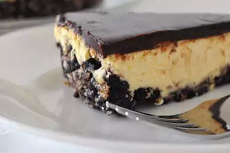

Canada Day Nanaimo Bar Cheesecake

Description
The taste of a Nanaimo bar in a cheesecake! Can't get any better than this. Make in the jelly roll pan for serving a
larger crowd. Result is thinner but still as tasty. (You will need to adjust baking time if you use the bigger
pan.)
Ingredients
- 2 1/2 cups crushed chocolate cream-filled sandwich cookies (such as OREO® Cookies)
- 1/2 cup butter, melted
- 1/4 cup chopped pecans
- 1/2 cup flaked coconut
- 4 (8 ounce) packages cream cheese, softened
- 1 cup white sugar
- 1/4 cup custard powder (such as Bird's® Custard Powder)
- 4 eggs
- 6 (1 ounce) squares semisweet chocolate
- 1/2 cup heavy cream